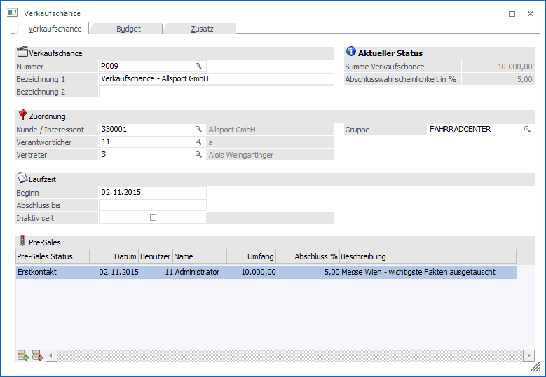
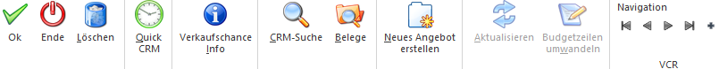

Im Programm "Verkaufschance", welches über den Menüpunkt…
1 WinLine FAKT
1 Stammdaten
1 Projektverwaltung
1 Verkaufschance
… aufgerufen wird, erfolgt die Anlage und Definition von Verkaufschancen.

Bei der Erfassung einer Verkaufschance kann die geschätzte bzw. kalkulierte Laufzeit und die voraussichtlich anfallenden Kosten (Budget) hinterlegt werden. Bei der weiteren Bearbeitung werden die tatsächlich angefallenen Kosten erfasst und der Status der Verkaufschance mit der daraus resultierenden Abschlusswahrscheinlichkeit aktualisiert.
Aufgrund dieser Werte kann der aktuelle Stand einer laufenden Verkaufschance bewertet werden. Dadurch ist es möglich zeit- und kostenkritische Vorgänge frühzeitig zu erkennen.
Hinweis
Neben der manuellen Anlage kann eine Verkaufschance aus den Programmen "Personenkonten", "Interessentenverwaltung", "Kundeninformation" oder " Interessenteninformation" durch Anwahl des Buttons "Neue Verkaufschance" halbautomatisch angelegt werden. Hierbei werden die folgenden Felder automatisch gefüllt:
ü Nummer
Die Nummer wird unter
Berücksichtigung eines ggfs. definierten Nummernkreises automatisch
vergeben.
ü Bezeichnung 1
Die Bezeichnung
wird mit "Verkaufschance - Kontoname" gefüllt.
ü Kunde / Interessent
Dieses Feld
wird der aktuellen Kontonummer befüllt.
ü Verantwortlicher
Der
Verantwortliche wird mit dem aktuellen WinLine Benutzer belegt.
ü Vertreter
In dieses Feld wird
der Vertreter des aktuellen Kontos eingetragen.
ü Beginn
Der Beginn wird mit dem
aktuellen Tagesdatum belegt.
ü Pre-Sales-Status
Es wird der
definierte Start-Status aus dem Bereich "Pre-Sales" automatisch eingetragen.
Buttons

Ø Ok
Durch Anwahl des Buttons "Ok" bzw. der Taste F5 wird die Verkaufschance gespeichert.
Ø Ende
Durch Anwahl des Buttons "Ende" bzw. der Taste ESC wird das Fenster geschlossen und alle nicht gespeicherten Eingaben verworfen.
Ø Löschen (nur im Register "Stamm" anwählbar)
Mittels des Buttons "Löschen" können angelegte Verkaufschancen wieder entfernt werden.
Hinweis
Wird die Nummer der Verkaufschance in Belegen verwendet, so erfolgt eine zusätzliche Sicherheitsabfrage ob die Verkaufschance trotzdem gelöscht werden soll (im Beleg selbst bleibt die Nummer erhalten).
Ø Quick CRM
Wenn dieser Button angeklickt wird, kann ein CRM-Fall zu der gerade geöffneten Verkaufschance erfasst werden. Voraussetzung dafür ist:
ü Es muss eine gültige CRM-Lizenz vorhanden sein.
ü Der Benutzer muss ein CRM-Benutzer sein.
ü Es müssen entsprechende CRM-Aktionen bzw. CRM-Workflows mit der Kennzeichnung "QUICK CRM" angelegt sein.
Hinweis
Es werden im WinLine Standard 9 CRM-Aktionen (CRM-Gruppe "100") mitgeliefert.
Ø Verkaufschance Info
Es wird die Projektabrechnung geöffnet, auf welcher alle relevanten Daten der aktuellen Verkaufschance aufgelistet werden.
Ø CRM-Suche
Mit Hilfe dieses Buttons wird die CRM Suche geöffnet und die CRM-Fälle der Verkaufschance angezeigt.
Ø Belege
Durch Anwahl des Buttons "Belege" wird das Programm "Belege" aufgelistet, welches die aktuellen Belege der Verkaufschance auflistet.
Ø Neues Angebot erstellen (nur im Register "Budget" anwählbar)
Mit Hilfe dieses Buttons können Angebote für die aktuelle Verkaufschance erfasst werden. Es wird hierfür ein neuer Beleg für den Kunden mit der Nummer der Verkaufschance geöffnet.
Hinweis
Neben diesem automatischen Weg können natürlich auch Angebote manuell (über die Belegerfassung mit Hinterlegung der Verkaufschance) erfasst werden
Ø Aktualisieren (nur im Register "Budget" anwählbar)
Durch Drücken dieses Buttons werden die ausgewiesenen Werte im Register "Budget" aktualisiert.
Ø Budgetzeilen wandeln (nur im Register "Budget" anwählbar)
Durch Anwahl des Buttons "Budgetzeilen wandeln" können die Budgetwerte der Verkaufschance in einen Beleg übergeben werden. Nähere Informationen diesbezüglich entnehmen Sie bitte dem Kapitel "Projekte einlesen".
Ø VCR-Buttons
Über die so genannten VCR-Buttons, welche in jedem Register zur Verfügung stehen, kann durch Mausklick zwischen den Datensätzen geblättert werden.
ü  Damit kann der
erste Datensatz angesprochen werden.
Damit kann der
erste Datensatz angesprochen werden.
ü  Damit kann der
vorherige Datensatz angesprochen werden.
Damit kann der
vorherige Datensatz angesprochen werden.
ü  Damit kann der
nächste Datensatz angesprochen werden.
Damit kann der
nächste Datensatz angesprochen werden.
ü  Damit kann der
letzte Datensatz angesprochen werden.
Damit kann der
letzte Datensatz angesprochen werden.
ü  Damit wird die
nächste freie Nummer für die Neuanlage gesucht.
Damit wird die
nächste freie Nummer für die Neuanlage gesucht.